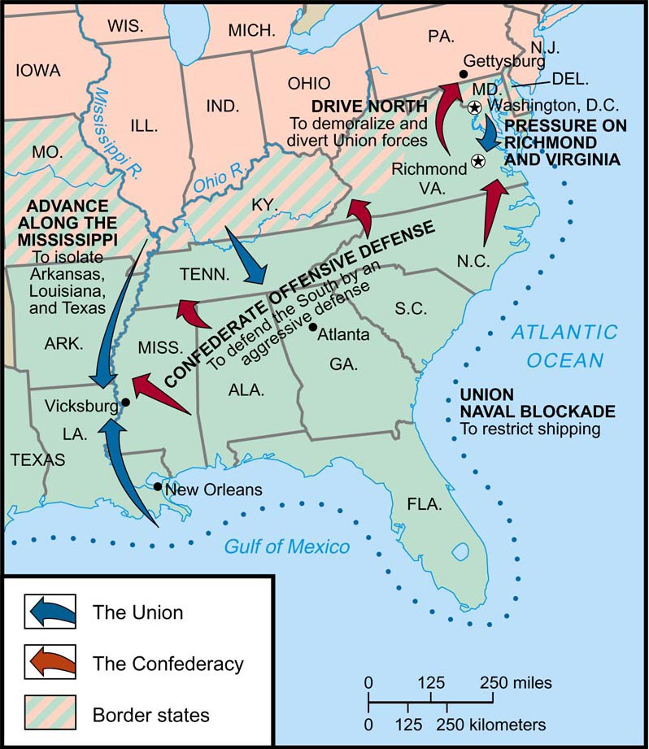

Grand Strategy of the Union and the Confederacy
(1861-65)

This map shows the main strategic imperatives adopted by each side in the Civil War.
The North worked to put pressure on the South by blockading its ports, conquering the
Mississippi River (thus splitting the Confederacy in two), and making consistent moves
towards the Confederate capital at Richmond, Va. Because the purpose of Northern grand
strategy was to squeeze the life out of the South, it was popularly known as the
"Anaconda Plan."
The South primarily assumed a defensive posture during the Civil War, taking the
conflict to the Northern populace only when momentum was heavily in their favor. This
approach, known as the offensive-defensive plan, was tailored to the fact that the
Confederacy had far fewer men and resources than the Union--it is considerably easier to
play defense than offense.
Note: Click on the image for a larger version.
Source: Eric Foner, Give Me Liberty! An American History (New York: W. W. Norton & Company, 2008).
|

{kind=link}